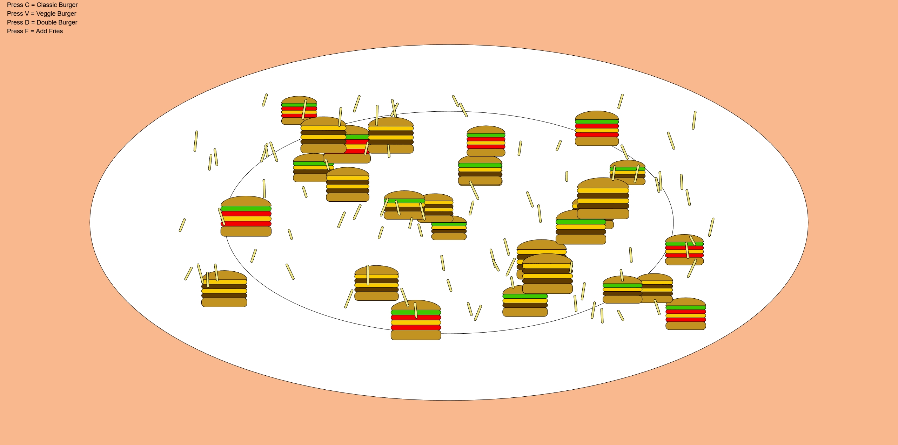
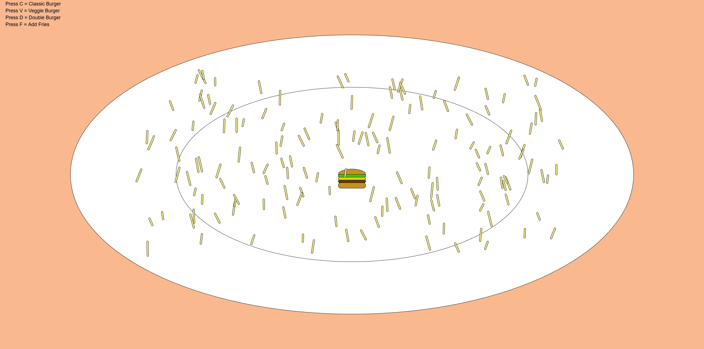

01. Concept & Inspiration
I designed this Burger and Fries Generator because they are my favorite foods. Beyond coding, this project connects to a personal dream I’ve held for a long time: opening my own fast food restaurant someday.
The goal was to create a satisfying, randomized experience where users can "build" their own plate using simple keyboard commands.
02. Technical Implementation
I used Object-Oriented Programming (OOP) to create dynamic Burger and Fries classes. Each burger type (Classic, Veggie, Double) features a unique combination of layers like lettuce, tomato, cheese, and patties.
// Dynamic Burger Layer Logic
if (type === "classic") {
this.layers = ["lettuce", "cheese", "patty"];
} else if (type === "veggie") {
this.layers = ["lettuce", "tomato", "cheese", "tomato"];
} else if (type === "double") {
this.layers = ["cheese", "patty", "cheese", "patty"];
}

03. Interaction Guide
The interaction is driven by the keyPressed() function:
- C, V, D: Adds a Classic, Veggie, or Double burger with random size and position.
- F: Adds a cluster of 10 randomly placed and rotated fries.